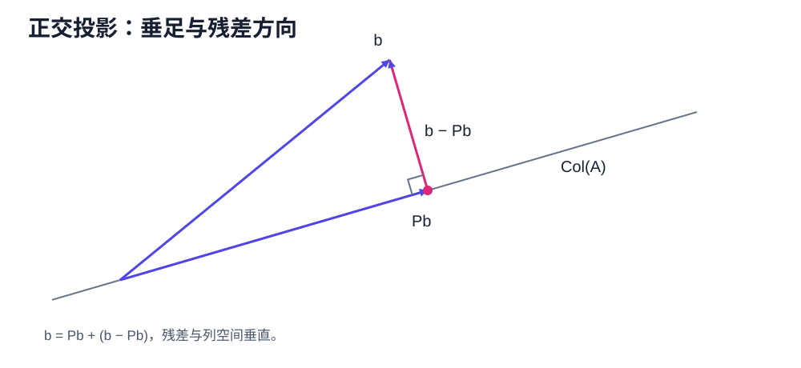
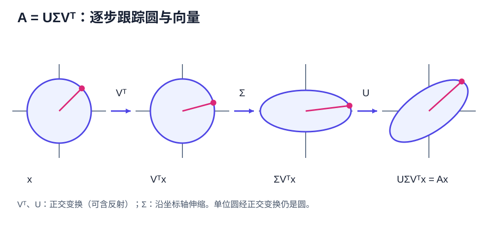

SVD & Least Squares
本章从正交投影开始，推导最小二乘问题（least-squares problem）与奇异值分解（Singular Value Decomposition，SVD），并完成一个可逐步复算的 SVD 手算例子。摩尔－彭若斯伪逆（Moore–Penrose pseudoinverse）、全部最小二乘解和低秩逼近放在下一章。
正交性与投影

向量 \(u,v\in\mathbb R^m\) 正交，记为 \(u\perp v\)，当且仅当 \(u^Tv=0\)。若 \(u\) 是单位向量，则 \(b\) 在 \(u\) 方向的正交投影为
若 \(U\in\mathbb R^{m\times r}\) 的列标准正交，即 \(U^TU=I_r\)，则
先手算一次一维投影。令
投影系数为 \(u^Tb=4/\sqrt2=2\sqrt2\)，所以
直接检查 \(u^T(b-Pb)=0\)，说明残差确实垂直于投影方向。这个两维计算就是后面矩阵公式 \(Pb=UU^Tb\) 的最小原型。
命题。 \(P\) 是到 \(\operatorname{Col}(U)\) 的正交投影算子（orthogonal projector）：它满足
并且对每个 \(b\)，\(Pb\in\operatorname{Col}(U)\)，残差 \(b-Pb\) 与 \(\operatorname{Col}(U)\) 正交。
证明
由转置运算和 \(U^TU=I_r\)，
且
对任意 \(b\)，\(Pb=U(U^Tb)\) 是 \(U\) 的列向量的线性组合，所以属于 \(\operatorname{Col}(U)\)。同时
所以 \(b-Pb\) 与 \(U\) 的每一列正交，因而与整个列空间正交。
最佳逼近性质
定理。 \(Pb\) 是 \(\operatorname{Col}(U)\) 中距离 \(b\) 最近的唯一向量。
证明
任取 \(y\in\operatorname{Col}(U)\)，有分解
第一项与整个列空间正交，第二项属于列空间，所以两项正交。直接展开内积：
等号成立当且仅当 \(\|Pb-y\|_2=0\)，也就是 \(y=Pb\)，所以最近向量唯一。
最小二乘问题（Least-Squares Problem）
给定 \(A\in\mathbb R^{m\times n}\) 与 \(b\in\mathbb R^m\)，最小二乘问题为
目标不是让 \(x\) 接近 \(b\)，而是让可达到的向量 \(Ax\in\operatorname{Col}(A)\) 接近 \(b\)。
令 \(f(x)=\|Ax-b\|_2^2\)，展开得
对零基础读者，可以先按分量检查导数。写 \(A\) 的第 \(i\) 行为 \(a_i^T\)，则
对第 \(j\) 个分量 \(x_j\) 求偏导，并使用单变量链式法则：
把 \(n\) 个偏导按列排起来，正好得到
驻点满足正规方程（normal equations）：
必要性与充分性
定理。 向量 \(x_*\) 是最小二乘解，当且仅当它满足正规方程
此外，最小二乘解唯一，当且仅当 \(\ker(A)=\{0\}\)。
证明
先证充分性。若 \(A^T(Ax_*-b)=0\)，则对任意 \(h\)，
所以 \(x_*\) 是全局最小点。
再证必要性。若 \(x_*\) 是最小点，对任意方向 \(h\) 定义单变量函数
\(t=0\) 是 \(\phi\) 的最小点，因此 \(\phi'(0)=0\)。直接求导得到
这对所有 \(h\) 成立。特别取 \(h=A^T(Ax_*-b)\)，便有
所以正规方程成立。
最后证明唯一性判据。如果存在 \(0\ne h\in\ker(A)\)，则 \(A(x_*+h)=Ax_*\)，所以 \(x_*+h\) 与 \(x_*\) 有同一个目标值，解不唯一。反过来，若 \(\ker(A)=\{0\}\)，则对 \(h\ne0\) 有 \(Ah\ne0\)，上面的目标差 \(\|Ah\|_2^2\) 严格为正，所以没有另一个最小点。
奇异值分解（Singular Value Decomposition）

标准正交基扩充引理。 欧几里得空间中的任意标准正交向量组，都能扩充为整个空间的一组标准正交基。
证明
由第一章的基扩充引理，先把已有的标准正交向量 \(u_1,\ldots,u_k\) 扩充成一组基 \(u_1,\ldots,u_k,w_{k+1},\ldots,w_n\)。先令 \(q_i=u_i\)（\(1\le i\le k\)），再依次处理 \(w_j\)：减去它在此前所有单位向量方向上的投影，
再令 \(q_j=\widetilde w_j/\|\widetilde w_j\|_2\)。因为原向量组线性无关，\(\widetilde w_j\ne0\)；按构造，\(q_j\) 与此前各向量正交且长度为一。有限次重复后得到所需标准正交基。这就是格拉姆－施密特过程（Gram–Schmidt process）。
奇异值分解定理（SVD Theorem）。 对任意 \(A\in\mathbb R^{m\times n}\)，存在正交矩阵
以及矩形对角矩阵 \(\Sigma\in\mathbb R^{m\times n}\)，使
\(\Sigma\) 的非零对角元为
称为奇异值（singular values）。
证明：从谱定理构造奇异值分解
\(A^TA\) 是实对称半正定矩阵，因此存在正交矩阵 \(V\) 使
定义 \(\sigma_i=\sqrt{\lambda_i}\)。对每个 \(\sigma_i>0\)，令
则
所以这些 \(u_i\) 标准正交。再把它们补成 \(\mathbb R^m\) 的标准正交基，即得到 \(U\)。同时
对正奇异值成立，从而 \(A=U\Sigma V^T\)。
还需检查零特征值对应的方向。若 \(\lambda_i=0\)，则
所以 \(Av_i=0\)。因此 \(V\) 中所有列——包括零奇异值对应的列——都满足 \(Av_i=\sigma_i u_i\) 的矩阵形式，这才完整得到 \(AV=U\Sigma\)，即 \(A=U\Sigma V^T\)。
紧致奇异值分解（Compact SVD）
只保留正奇异值对应的向量，得到紧致奇异值分解：
其中
这里 \(\operatorname{Col}(A)=\operatorname{Col}(U_r)\)，而 \(\ker(A)=\operatorname{Col}(V_0)\)，其中 \(V=[V_r\ V_0]\)。
奇异值分解的手工计算
取
第一步计算
特征值均为 \(2\)，故奇异值 \(\sigma_1=\sigma_2=\sqrt2\)。可取
然后
补上 \(u_3=(0,0,1)^T\)，得到
直接相乘可验证 \(U\Sigma V^T=A\)。
练习
- 证明 \(P=UU^T\) 对称且幂等，并证明 \(I-P\) 也是正交投影。
- 对 \(A=\operatorname{diag}(3,2,0)\) 写出完整奇异值分解（full SVD）与紧致奇异值分解。
第一步提示
第 1 题先分别计算 \(P^T\) 与 \(P^2\)；第 2 题先计算 \(A^TA\)，再按奇异值从大到小排列对应向量。
答案。 第 1 题使用 \(U^TU=I\)；第 2 题可取 \(U=V=I\)、\(\Sigma=\operatorname{diag}(3,2,0)\)。